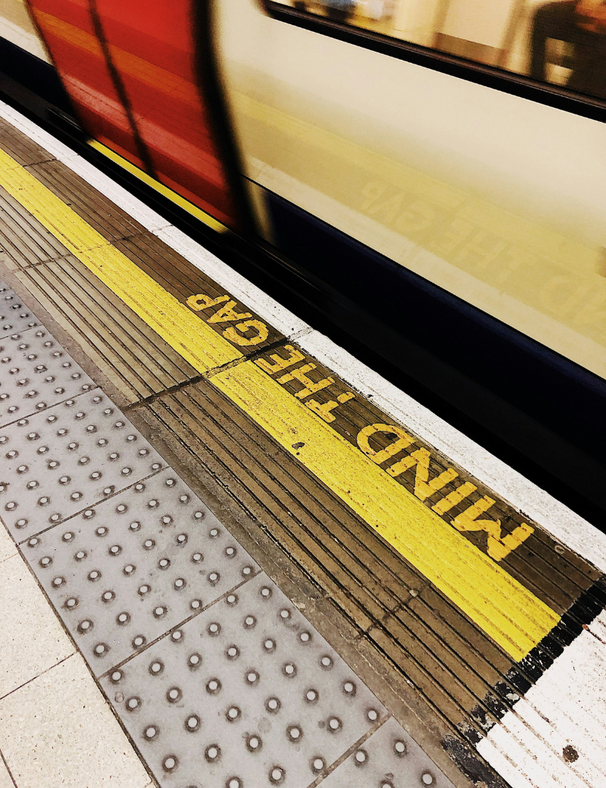

UCL CASA · URBAN DATA VISUALISATION · 2026
Investigating how transport connectivity shapes secondary school choice and access to opportunities across London.
Motivation
Every morning, close to 600,000 children travel to secondary schools across London.
Most students can reasonably access a secondary school near home.
However, not all schools offer the same opportunities.
In reality, access to choice schools (and better opportunities) often depends on connectivity — where you live shapes what you can reach.
01 — Context
Mapped across the city, these schools appear to be broadly distributed. But this distribution tells only part of the story.
Each dot represents a school. However, what it cannot show is the quality of education of the school, its admissions policy, or how long it takes a child in any given neighbourhood to reach it.
02 — Connectivity
A child living in inner London — like Clapham North in Lambeth — can reach up to 96 schools within a 45-minute transit journey. Multiple tube lines and bus corridors fan outward in every direction.
02 — Connectivity
In a bus-only outer London neighbourhood — like Harold Hill in Havering — that same 45-minute window reaches just 7 schools. The transit network simply does not extend here with the same density.
03 — What we explore
Travel to school
Understanding how children travel, and the barriers they face, sets the context for examining whether all children can realistically exercise school choice.
London has the highest rate in England — illustrating willingness to travel for opportunity. But how many children have the means to do so?
"19.9% of London's secondary students travel outside their home borough — the highest rate in England. But willingness to travel only translates to opportunity when the journey is actually possible."
Access to opportunity
We layer Progress 8 scores and Ofsted ratings onto the accessibility analysis — and find that filtering for quality significantly extends the journeys many children must make.
01 — Baseline Access
The map shows travel time from each LSOA to its nearest secondary school.
Dots mark every secondary school in London.
The map's color intensity provides a sense of travel time via transit (i.e. bus & rail).
02 — Quality Access
Once we filter for non-selective, high progress schools, median travel time rises — because fewer schools qualify and they are not evenly distributed across the city.
Highlighted dots show qualifying schools for the selected metric: Top 25% Progress 8 scores and Ofsted Outstanding ratings.
Use the toggle above the map to select the desired metric.
Use the slider to see how travel times compare with the baseline scenario.
03 — Mode comparison
Select a school type and travel mode to update the choropleth.
Each combination reveals a different dimension of potential access inequality.
04 — Borough summary
Median transit time · Top 25% P8 vs any school · by borough
Pockets of vulnerability
Using Local Indicators of Spatial Autocorrelation (LISA), we identify neighbourhoods where high transit times to Progress 8 schools coincide with elevated child deprivation — compounding barriers to opportunity.
01 — Spatial clustering
LISA clustering reveals LSOAs where high transit times to P8 schools are spatially concentrated alongside high levels of child deprivation. These High–High clusters represent neighbourhoods where the challenge is greatest.
Red areas on the map mark these pockets. They are not random — they cluster in specific outer-London corridors.
02 — Scale of the problem
Across London's High–High LISA clusters:
03 — Income context
Households in these cluster LSOAs have median incomes approximately 30% below the London average.
This makes car ownership — which would substantially cut travel times — or use of faster rail services financially inaccessible for many families. These children are reliant on a transit system that, in these corridors, leaves them furthest from opportunity.
Reflections

Image credits: Gary John Norman / Getty Images · Bruno Figueiredo / Unsplash · Nick David / Getty Images
About
Acknowledgements
Pathways to Progress was developed as part of UCL CASA's MSc in Urban Spatial Science module on Urban Data Visualisation, led by Prof Duncan Smith. The 2026 theme is “Urban Analytics”.
We thank Prof Duncan Smith and our PGTA Kayla McInnis for their valuable guidance and input, and extend special acknowledgment to Prof Adam Dennett for his wisdom and insights on the challenges facing secondary schools in London.
Data sources
Our team